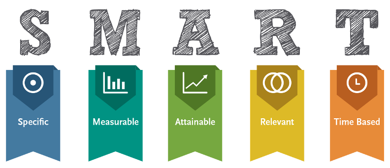

Organizujte svoje vreme
Za velike uspehe u učenju, kao i u životu, potrebno je vreme. Vreme je ograničeni resurs i veoma je važno da znate kako da njime efikasno upravljate. Današnji način života ne dozvoljava uspeh ukoliko sa svojim vremenom pojedinac ne postupa vrlo obazrivo i racionalno. Naime, zadaci se danas svakodnevno povećavaju, stalno pristižu nove informacije, obaveze stižu jedna drugu, tako da se često dešava da vreme predviđeno za slobodne aktivnosti koristite za obavljanje obrazovnih zadataka. To vrlo često za rezultat ima stres, koji može ugroziti fizičko i mentalno zdravlje. Uspeh u obrazovnom procesu, kao i kvalitet života, zavisi od toga kako upravljate raspoloživim vremenom. Gubljenje vremena je najskuplja navika od svih koje učenik može da ima u svom učenju. Jednostavno rečeno, ako traćite svoje vreme na beskorisne stvari, nećete ostvariti uspeh. Učenici u današnje vreme ne znaju da efikasno upravljaju svojim vremenom, preveliki deo dana provode na telefonu ili računaru, a to ih sprečava da maksimalno efikasno iskoriste svoje kapacitete.
Da biste uklopili svoje planirane aktivnosti u vreme koje vam je na raspolaganju, morate da kontrolišete svoj radni dan, a ne da radni dan kontroliše vas. Vremenom se može upravljati ako se svi poslovi obavljaju onda kada su isplanirani i ako im se posvećuje onoliko vremena koliko je planirano. Upravljanje vremenom polazi od planiranja zadataka, utvrđivanja prioriteta, planiranja i distribucije vremena. Ono osigurava da se bavite pravim aktivnostima, zadacima, ključnim problemima.
Pet najvaznijih principa u upravljaju vremenom
Pred vama se nalaze osnovni principi organizacije vremena koji se mogu primeniti kako u učenju, tako i u drugim životnim oblastima.
1.Priprema
Priprema je osnovni element upravljanja vremenom. U fazi pripreme se definiše plan učenja i pravi raspored aktivnosti. Planom učenja raspoređujete svoje dnevne obaveze oko učenja sa ostalim obavezama. Vrlo je važno da tokom kreiranja plana predvidite i svakodnevne male pauze, prekide i odgađanja. Pokušajte da napravite i raspored za porodicu, prijatelje, sport, izlaske, računar i telefon... Zapamtite: svaki minut potrošen na pripremu višestruko se vraća kasnije kroz efekte i rezultate učenja.
2.Formulisanje cilja ucenja
Drugi princip upravljanja vremenom u učenju jeste formulisanje cilja učenja. Iako je postavljeni cilj naš najsnažniji pokretač, najveći broj učenika nema postavljen cilj učenja. Nužno je da postavite cilj koji će vas podsticati, bilo da je to završen kurs, postizanje visokih rezultata, ili kvalitetno urađen zadatak. Taj cilj morate duboko u sebi osetiti, mora vas poneti. Svim svojim bićem, svom svojom delatnošću, znanjem, strašću, inteligencijom, osećanjima morate se posvetiti dostizanju sebi postavljenog cilja.
Dobro postavljen cilj je konkretan, merljiv, dostižan, relevantan i vremenski ograničen, to jest precizno je određeno vreme koje je potrebno za njegovo ostvarivanje. Pri postavljanju ciljeva bitno je da oni budu dostižni, ali ne i prelako ostvarljivi, jer u tom slučaju nećete koristiti svoj pun potencijal. Sa druge strane, preteško ostvarljivi ciljevi, koji su nerealni, mogu dovesti do pada motivacije, tako da je potrebno pravilno odrediti meru.
3.Razlaganje zadataka na manje komponente
Treći princip upravljanja vremenom u učenju je razlaganje zadataka na manje komponente. Razbijanjem velikog zadatka u seriju manjih i izradom rasporeda vremena za svaki korak možete napraviti gotovo sve što zamislite, uz mnogo manje stresa i nerviranja nego kada pokušavate da završite sve odjednom.
4.Odredjivanje prioriteta zadataka

Sledeći princip jeste određivanje prioriteta zadacima. Vrlo je važno da dodelite prioritete zadacima. Prvo, napravite listu najvažnijih zadataka u toku dana, zatim listu srednje bitnih zadataka koje bi trebalo da obavite u toku dana i listu zadataka koje ćete uraditi ako vam ostane slobodnog vremena. Na taj način ćete znati na šta da se usredsredite najviše, a za ostalo, ako stignete – odlično, ako ne stignete – biće vremena.
5. Najteže i najzahtevnije stvari treba raditi kada ste najproduktivniji
Peti princip podrazumeva da najteže i najzahtevnije stvari treba raditi kada ste najproduktivniji i najkoncentrisaniji. Time ćete osigurati da najkomplikovanije i najsloženije stvari završavate dok ste sveži, orni, odmorni i puni energije. Ovaj princip će vam znatno pomoći i kasnije u toku karijere, jer ćete ga moći primeniti i na vaš posao.